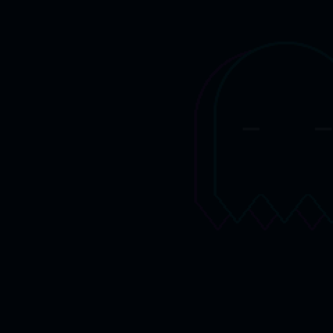

Firmware for the M-VAVE FM-1 · {{VERSION}}
{{NAME}}
{{LEAD}}

{{LEAD}}

{{NEWS_DATE}}
{{NEWS}}{{DEVICE_SUB}}

{{FEATURES_SUB}}
{{GALLERY_SUB}}
Custom firmware should never be a one-way door.
Chrome or Edge, a USB data cable, two minutes. The installer checks the package before writing and asks the FM-1 what it runs afterwards. An interrupted install resumes.
Hold OCT− while switching on (or let two starts fail) and the FM-1 starts a small rescue mode with only USB, ready for a new install. The boot code itself is never written.
The installer can put M-VAVE's official V15 firmware back at any time, after saving your music to a file.
Try it first in the browser, no FM-1 needed, or install it now.